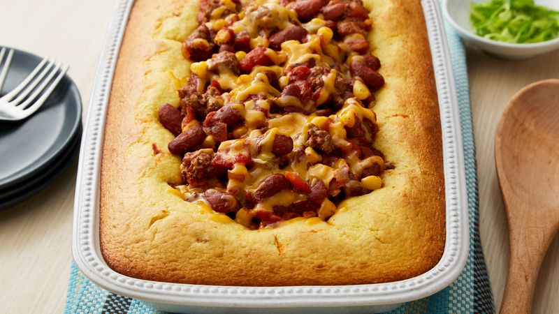

Chili Cornbread Casserole

Description
2 good things in 1 dish
Ingredients
- 1 lb ground beef
- 1 jar (16 oz) salsa
- 2 cups dark red kidney beans
- 1 can (14.5 oz) decied peeled tomatoes
- 1.5 cups frozen corn
- 3 tsp chili powder
- 1 tsp ground cumin
- 1 pouch (6.5 oz) Betty Crocker cornbread mix
- 1/3 cup milk
- 1/3 cup shredded cheddar cheese
- 1 tbsp sliced green onion
Steps
- Preheat oven to 400°F.
- In 12-inch skillet, cook ground beef over medium-high heat, stirring occasionally, until thoroughly cooked; drain. Stir in salsa, kidney beans, tomatoes, corn, chili powder and cumin. Cook 3 to 4 minutes, stirring occasionally, until thoroughly heated.
- Meanwhile, make cornbread as directed on pouch, using milk. Spoon cornbread batter around outside edge of ungreased 12x8-inch (2-quart) glass baking dish. Spoon hot beef mixture into center. (Casserole will be full.)
- Bake 18 minutes. Sprinkle with cheese; bake 4 to 5 minutes longer or until cheese is melted and cornbread is deep golden brown. Sprinkle with green onion just before serving.